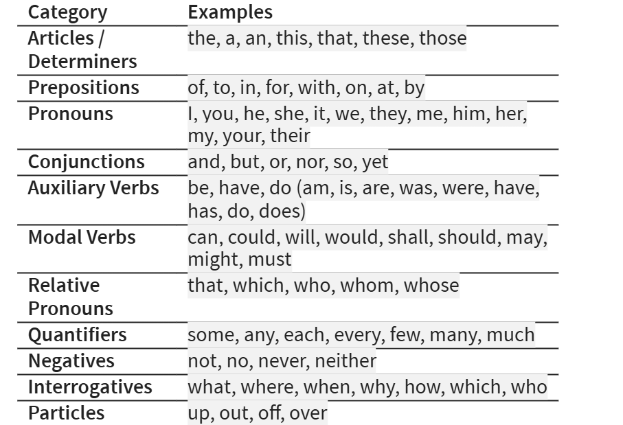

to BE
or NOT
to BE
//
THAT is the
QUEStion
https://www.youtube.com/watch?v=bIBUNreInpU
It was a bright cold day in April,
and the clocks were striking thirteen
Which words are which??

STANdard
INterview
QUEStions
Tell
me
aBOUT a
CHALlenge you faced
and how you HANDled it.
Tell me about yourself.
Tell me about a challenge you faced and how you handled it.
What are your strengths.
What is your biggest weakness.
How do you handle pressure or tight deadlines.
Where do you see yourself in five years?
Why do you want to work here?
Do you want to work here?
Do you have any questions?
Standard interview questions
Tell me about yourself.
Tell me about a challenge you faced and how you handled it.
What are your strengths.
What is your biggest weakness.
How do you handle pressure or tight deadlines.
Where do you see yourself in five years?
Why do you want to work here?
Do you want to work here?
Do you have any questions?
In pairs, mark the important words / syllables
(Group phrases where helpful)
TELL me about yourself?
tell me about
a CHALLenge you faced
and how you handled it?
WHY do you want to work here?
What are your strengths?
What is your
biggest weakness?
How do you
handle pressure
or tight deadlines?
Where do you
see yourself
in five years?
Do you have any
QUEStions?
Do you want? // to work here?
Answer 1a
“I’m originally from Vietnam. I studied business, and I’ve spent the last year working on process‑improvement projects. I’m motivated by solving problems and helping teams work better.”
I’m originally
from Vietnam,
I studied marketing,
and I’ve spent the last year
working on
process‑improvement projects.
I’m motivated by solving problems
and helping teams work better.
I’m oRIginally
from VietNAM,
I STUdied BUSiness,
and I’ve spent the LAST year
WORKing on
PROcess‑improvement projects.
I’m MOtivated
by solving problems
and helping teams
work better.”
Answer 1b:
“I’m originally from Vietnam, I studied business, and I’ve spent the last year working on projects that involve improving processes. I’m motivated by solving problems and helping teams work better.”
I’m originally
from VietNAM,
I studied MARketing,
and I’ve spent the LAST year
WORKing on
PROjects that involve
imPROving processes.
I’m MOtivated
by solving problems
and helping teams work better.”
A: “I admire the company’s focus on innovation and sustainability, and I see a strong match between your goals and my background in operations.”
B: “I like the culture here and people speak highly of the teamwork. I also think it’s a place where I could grow and contribute straight away.”
For breakfast, I’d like tea, toast and jam
UP, UP, down
or
down, down, UP
UP, UP, down
or
down, down, UP
NB English intonation runs across the phrase, not the word.
Word stress
Sentence / Phrase stress
Chunking
Intonation
Yes-No questions v WH-questions
The music of lists
The sound of confidence.